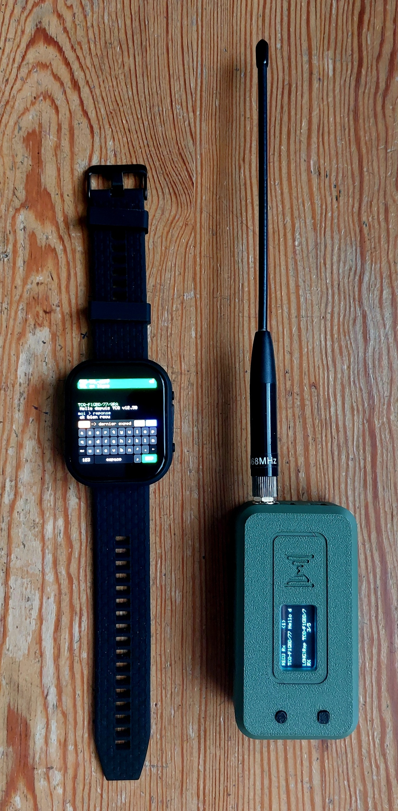

Montre TML v1.1
La messagerie LXMF d'urgence au poignet, reliée en ESP-NOW au TransMiniLora.

Chrome ou Edge, sur ordinateur. Environ 1,2 Mo, une minute.
Une seule carte est compatible : la Waveshare
ESP32-S3-Touch-AMOLED-2.06. Ce binaire ne convient ni à la
variante ESP32-C6, dont le brochage diffère, ni à aucune autre carte —
l'écran resterait noir.
Ce que fait cette version
Alerte RASECsirène + écran rouge sur
#raMessages LXMFémission, réponse, réception
Courrielpar passerelle ADRAlink
Annoncepavé ANN
Veilleécran éteint après 1 min
Accuniveau et charge au bandeau
Historique12 messages conservés
ClavierAZERTY tactile, 3 modes
Avant de flasher
- Brancher la montre sur un port USB-C avec un câble de données : beaucoup de câbles ne portent que l'alimentation.
- Fermer tout ce qui pourrait tenir le port série : moniteur, IDE, autre onglet de flashage.
- Cliquer sur le bouton, puis choisir le port dans la fenêtre du navigateur.
- Si aucun port n'apparaît, maintenir
BOOTenfoncé, brancher le câble, relâcher.
Il faut aussi un TransMiniLora
La montre ne transmet rien elle-même. Le TransMiniLora reste le modem LoRa et la pile Reticulum / LXMF, et doit tourner avec un firmware intégrant le pont ESP-NOW.
Au premier démarrage
| Ce que vous voyez | Ce que ça veut dire |
|---|---|
| Bandeau rouge, « TML absent » | Normal : la montre balaie les canaux WiFi 1 à 13 |
| Bandeau vert avec un indicatif | Le TML répond, vous pouvez écrire |
| « tactile non detecte » | Contrôleur CST9220 non géré ; l'écran fonctionne, pilotage par la console série |
| Écran noir | Ce n'est pas la bonne carte, ou le flashage a échoué |